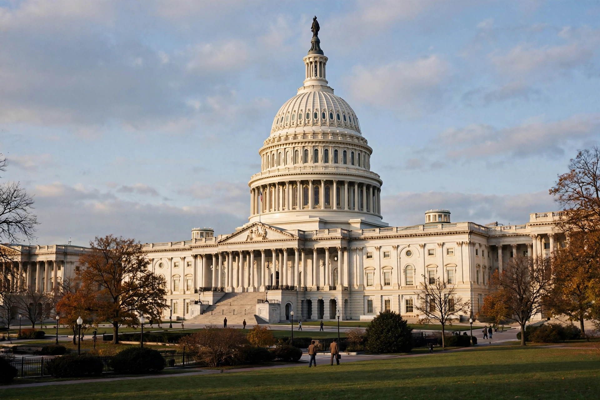

The International Emergency Economic Powers Act (IEEPA), Title II of Pub. L. 95–223, 91 Stat. 1626, enacted October 28, 1977, is a United States federal law authorizing the President to regulate international commerce after declaring a national emergency in response to any unusual and extraordinary threat to the United States which has its source in whole or substantial part outside the United States.

IEEPA was enacted to limit the peacetime powers previously exercised under the Trading with the Enemy Act of 1917, while providing a new foundation for economic sanctions. It requires the President to consult Congress and report periodically on emergencies declared under it.
Once an emergency is declared, the President may investigate, regulate or prohibit transactions in foreign exchange, banking transfers, and the import or export of property in which a foreign country or national has an interest. These powers underpin most U.S. sanctions programmes administered by the Office of Foreign Assets Control.
IEEPA was first used during the 1979 Iran hostage crisis to freeze Iranian assets. It has since supported sanctions against numerous countries and, in 2025, became the statutory basis cited for broad tariffs, prompting legal challenges over whether it authorises tariffs at all — an issue contested in U.S. courts.